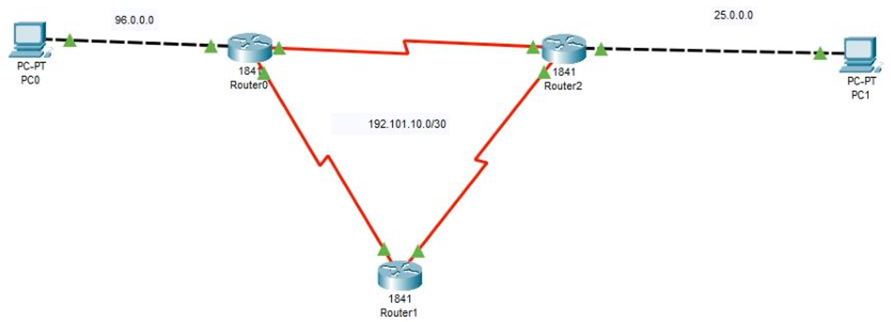
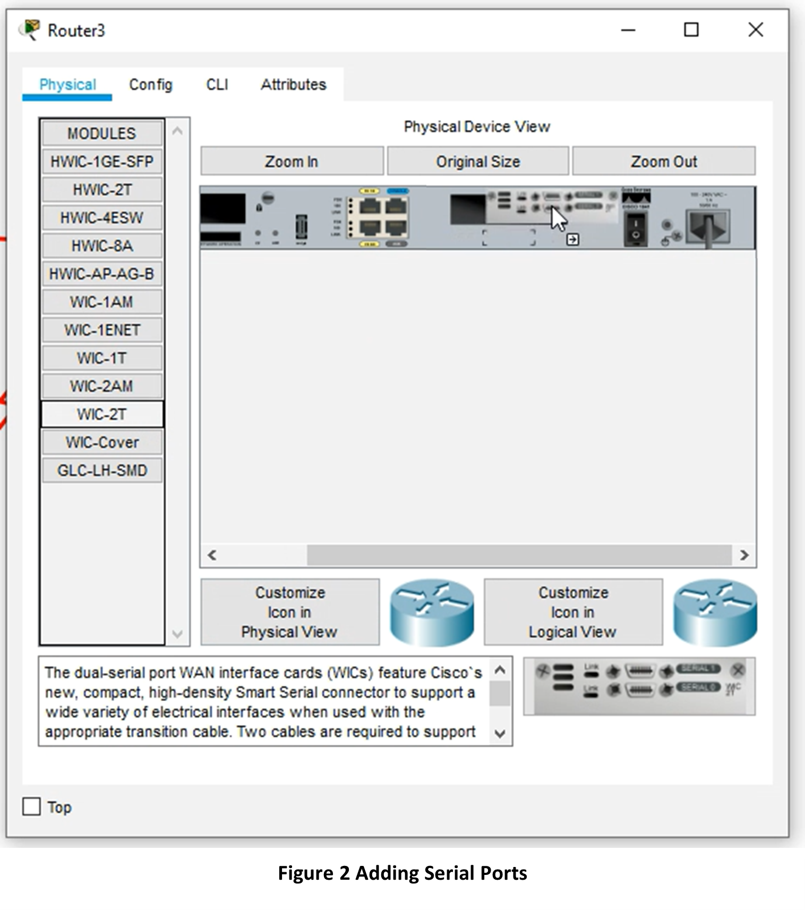
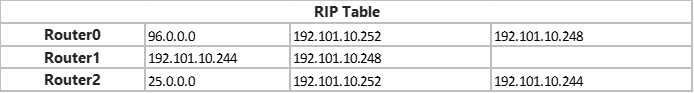

RIP
This is a rip routing lab in which we will learn how to configure RIP routing for a network.
Part 1
Step 1
You are to configure a network with 2 user end devices and three Router 1841 as seen in figure
Figure 1 illustrates how the setup should look.

Figure 1 RIP Setup
Remember to use the ? if you are unsure on what to do next or how each command, argument, keyword works
If you are struggling to get the components you can download the pkt file here: rip_1.pkt
Step 2
For each Router 1841 you will need to single click to open the configuration window, select the Physical tab then click ‘n’ drag WIC-2T to the SLOT 0 as seen below. Notice that the power switch is off, no green light.

Step 3
The interfaces should be configured as seen in table 1

Step 4
Next test that your packets can reach from PC0 to Router 0 and PC1 to Router 2
Step 5
Next check that all three routers can receive packages to and from each other, if not revisit your connections and the interface table, table 1.
Step 6
Now we are ready to create the RIP Routing Table for this network. Click each router and go to Config and then click RIP in the submenu.
Step 7
Next input the following IP’s into each Routers RIP Table,

Step 8
Now with click PC 0 and go to Desktop and choose Command Prompt

Step 9
Then ping PC 1’s IP and you should have a successful return
Step 10
Then let us see which IP route the packets took, use the tracert command
Step 11
Repeat for the other PC.
Step 12
Now what happens when one of the routes is taking down, hypothetically the wire has a fault. Turn off the ports s/0/0/1 for router 0 and router 2 and you should see two red triangles.

Step 13
Before redoing steps 9 10 and 11, what do you think will happen, what outputs might you see on the command prompt for ping and tracert.
Step 14
After completing steps 9,10 and 11, do the outputs confirm what you thought in step 13? If not why, and if so why?
Step 15
In each router add a password for each mode using the password command as seen in the lecture.
Step 16
For each router add the following banner motd
This device is for authorized personnel only. If you have not been provided with permission to access this device - disconnect at once.
Step 17
Now create a #banner login # message
Step 18
Additionally, an EXEC message too #banner exec #
*** Ensure that you update the system configuration ***
*** documentation after making system changes. ***
Step 19
Finally test that all routers are password protected and that the messages for 16 to 18 are present.
Part 2
Step 1
You are to configure a network with 4 user end devices and three Router 1841 as seen in figure

Remember to use the ? if you are unsure on what to do next or how each command, argument, keyword works
If you are struggling to get the components you can download the pkt file here: rip_2.pkt
Step 2
Refer to Part 1, and try to configure the network.